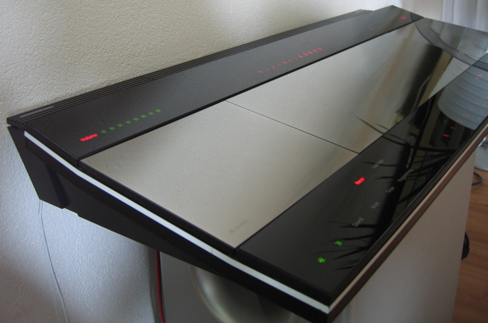

Bang & Olufsen Beocenter 9500
A music system with no buttons at all — controls printed in graphite under smoked glass that sense your finger before you touch them

Overview
The Bang & Olufsen Beocenter 9500 (1989) was a complete music system — AM/FM tuner, Compact Disc player, cassette deck, and amplifier — contained in a single sculptural slab of mirror-polished aluminium and smoked glass. Its defining feature is that it has no mechanical controls of any kind on its main face. Instead, the information and controls are printed in conductive graphite ink on the underside of the glass and energised with a high-frequency current, turning the glass surface itself into a capacitive sensor. A finger approaching a control couples to the field and invokes it before physical contact; only the LEDs relevant to the current state are lit, so the panel appears dark and blank until you reach for it. The CD and cassette lids glide open on a light touch of their display area. It is one of the purest examples of zero-force, invisible-until-needed control to reach the consumer market.
Deep dive
Rather than silkscreened legends lit from behind, the Beocenter 9500 prints its labels and touch electrodes in graphite on the inside of the smoked-glass face. A high-frequency signal is driven through those printed traces, and a finger near a control shunts part of the field to ground, which the system reads as a press. Because sensing happens by proximity, the user does not have to press with force, and because only the active labels are illuminated, the idle object looks like a dark mirror rather than a dashboard.
The 9500 completed a line that began with the Beomaster 1900 (1976), which first introduced B&O's touch-sensitive operation, and continued through the Beocenter 9000. David Lewis, working in B&O's design department, refined Jacob Jensen's panel language into a single continuous glass-and-aluminium surface. The design won an iF Product Design Award in 1990.
This is a controls-are-not-buttons interface: the meaning of each control is a printed graphic plus a capacitive field, not a keycap. The CD and tape lids are opened by touching their region on the glass, so even physical access to the media is mediated by the sensing surface — a rare case where the same invisible layer both commands and reveals the machine.
Long before capacitive touch became ubiquitous on phones, the 9500 showed that a consumer appliance could be operated entirely by unlabeled-until-lit fields printed under glass, with no moving parts to wear out and no tactile affordance to learn around. It sits at the far end of a design spectrum from the era's pushbutton hi-fi, and it makes the case that an interface can be almost entirely optical and electromagnetic rather than mechanical.
Team & pioneers
- Bang & Olufsen. Danish consumer-electronics firm that developed the touch-sensitive glass panel and integrated system.
- David Lewis. Designer who completed the Beocenter 9500's glass-panel design from Jacob Jensen's earlier Beocenter concept.
- Jacob Jensen. B&O's principal designer whose Beocenter 9000 established the panel language the 9500 extended.